MATLAB1
Introduction to MATLAB
Intro to MATLAB

MATLAB is an advanced computing environment that is used in a diverse array of applications: mathematics, signal processing, control design, financial modeling, statistical analysis and computational biology. MATLAB contains an interactive environment to perform calculations and data analysis, and to create graphs, pictures and movies. Additionally, MATLAB contains a programming language that allows one to create reusable functions, procedures and algorithms. MATLAB gets its name from “MATrix LABoratory” and fittingly, matrices are the basis of almost all of MATLAB’s calculations. this class will work through the basics of using the MATLAB interface and basic syntax of the programming language.
Make sure to download the Class Files for this course from the Canvas page before you continue on.
MATLAB Interface
The MATLAB interface consists of different panels. Some panels may be combined in one window and their names are shown on different tabs. Clicking on a tab will bring that panel to the front. Different panels can be managed from the layout menu in the environment tab at the top of the screen. The default interface varies between versions of MATLAB.
Launching MATLAB
-
Click the Windows Start icon on the bottom left corner of the screen.
-
Type MATLAB into the search bar and click on “MATLAB 2018a”. A window like the one below will be seen.
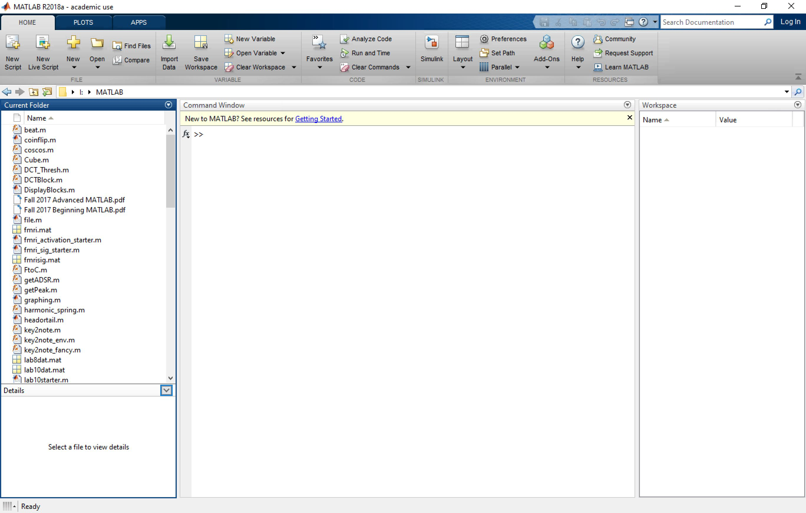
MATLAB Environment
Command Window
The Command Window is the main screen of MATLAB. This is the area where calculations are entered and instructions are given to MATLAB. It also displays the results of the calculations and any errors in your code.
Workspace
The Workspace panel shows all of the variables that MATLAB currently has stored. The panel also gives information about the value or size of the variable, and a description if one exists.
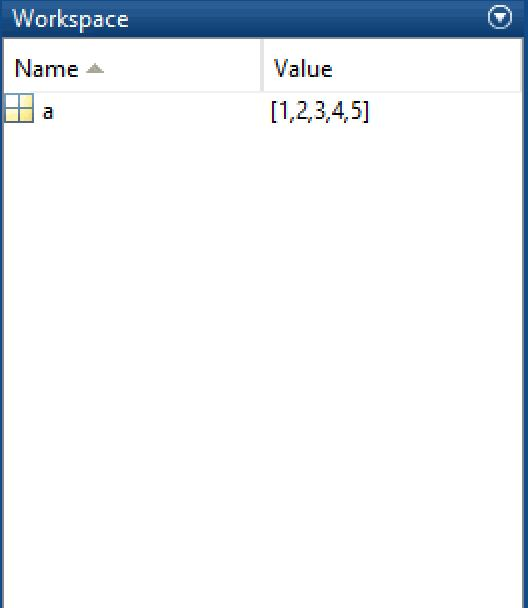
Double clicking on any variable will open a spreadsheet that shows what the variable contains and allows you one way to edit the variable.
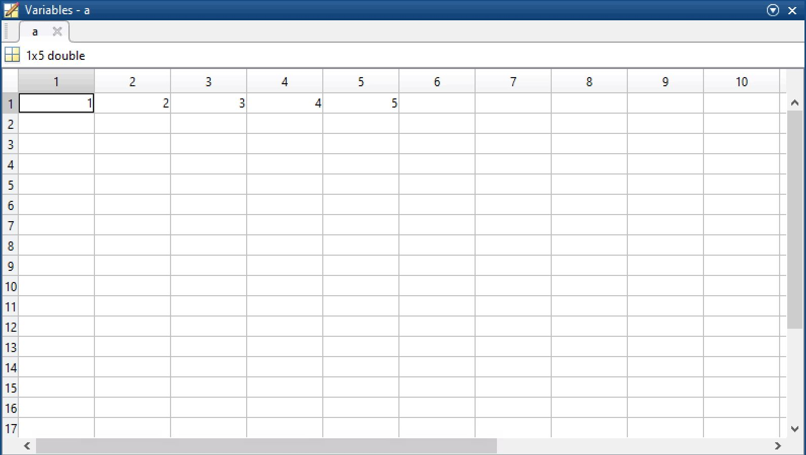
Command History
The Command History panel shows all of the instructions and/or calculations that have been entered in the Command Window. Double clicking on any line in the Command History will rerun that command.
To display the Command History go to the environment panel towards the upper middle part of the screen. Select Layout > Command History > Docked.
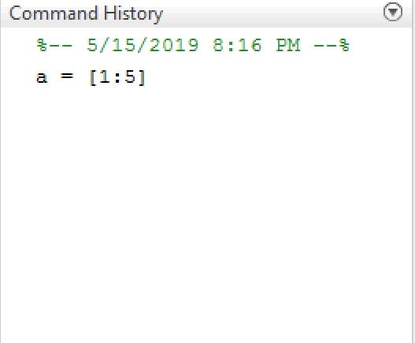
enter commandhistory in the command window
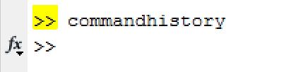
Current Folder
The Current Folder panel shows all of the user files and functions that are available for MATLAB to access. the Current Directory can be changed by entering a new path in the Current Folder box at the top left of the screen.
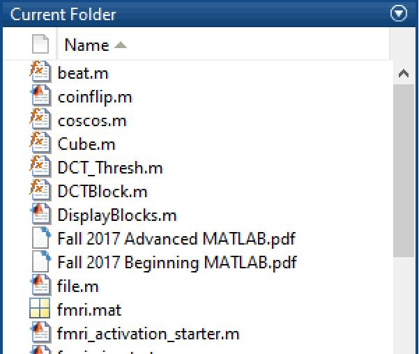
M Code
Basic Operators
The simplest use of MATLAB and M Code is using the Command Window as a calculator.
At the command prompt, enter 2 + 5
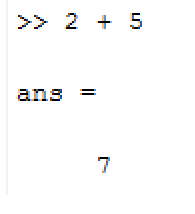
You can see that MATLAB responds with the answer. Notice that extra whitespace is ignored in MATLAB. MATLAB can understand all of the basic operators.
Try entering some of these:
- 9000 - 523
- 50 * 25
- 30 / 10
- 30 ^ 2 + 25
MATLAB remembers every line that you type in the command window. To access previous lines, press the up arrow at the command prompt.
Additionally, MATLAB can understand more advanced operators.
Try entering the expressions below:
- sin(90)
- cos(sin(90^2))
- atan(.5)

Finally, MATLAB has some built-in numbers. For instance, instead of entering 3.14159, you can just type in pi.
- pi - 3.14159
- eps - the floating point precision of MATLAB
- inf - infinity
Storing Variables
You may have noticed that during those operations, MATLAB returned the answer and on the line above that, it said ans =.
Additionally, you can notice that "ans" was added to the Workspace window and its value is the result of the last operation

"Ans" is a default variable created by MATLAB to store the answer of the most recent operation performed in the Command Window. A variable is a reference to a memory location that contains a value. the usefulness of variables is that they can be quickly and easily referenced later. For example, it is easier to remember pi, than 3.14159.
At the command prompt, enter ans.
You can see that it displays the value held inside of that variable. You can also use "ans" in new calculations.
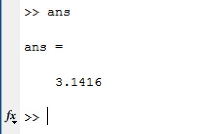
In addition to the "ans" variable, you can create any variable that you want and assign it a value.
At the Command Prompt (in command window), enter radius = 5
When you hit enter, you can see that instead of “ans=”, MATLAB displays the variable name and then its value.
Now enter mass = 50;
Pay attention to the semicolon after mass = 50
You can see that for the "mass" variable, MATLAB didn't display anything. This is because of the semicolon at the end of that line. A semicolon tells MATLAB to store the variable and not to display anything on the screen. As we work with more values, we will want to make use of the semicolon more often.
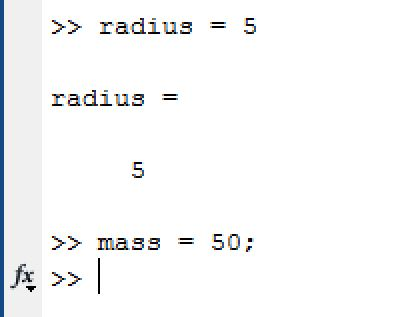
It is customary to use lower case letters for variable names. If the name has multiple words, it is customary to use camelCase, meaning the first word is lowercase and every subsequent word starts with a capital letter: e.g. variableNameInCamelCase.
MATLAB can determine the data type of any variable without any explicit definition. MATLAB variables can store Boolean, numeric or text data. the variable names are case sensitive.
Array, Vector and Matrix
Arrays
Arrays are one of the basic building blocks of MATLAB. An array is a structure that allows you to store multiple values under one name. Any type (numeric, boolean, strings) of information can be stored in an array and its size is adjustable.
Visually, an array can be represented as a grid, where each cell represents an open area for information. There are many ways to create and access arrays in MATLAB.
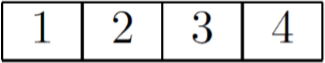
Making Arrays
-
One way to create an array is to type in the values individually by hand.
Let's try creating an array with name "array":
At the command prompt, enter array = [1,2,3,4,5]
We can either use commas or whitespace to seperate different elements in an array when creating it.
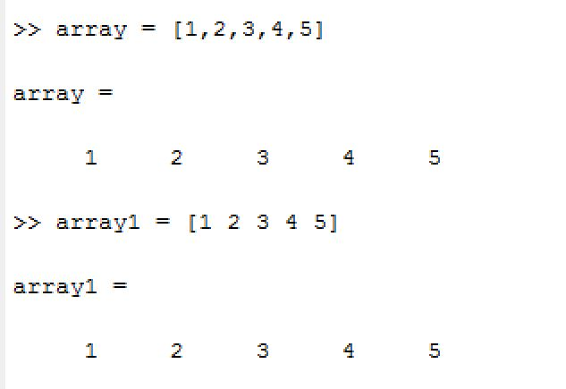
-
Another way to create an array is specifying a starting value, an increment value and an end value. MATLAB will automatically generate the values and store them in the array.
At the command prompt, enter time = [0:2:10]
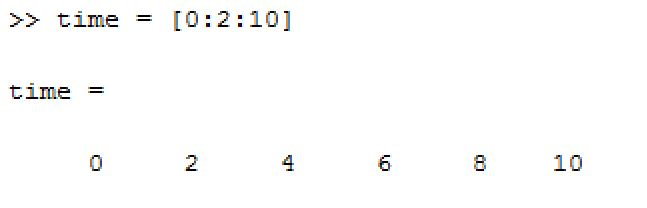
If the increment value is 1, then it is considered the default increment value, so it doesn't need to be entered. Therefore, time = [0:1:10] can be written as time = [0:10].
Matrix
In addition to one dimensional arrays, MATLAB can also store multidimensional arrays, also known as matrices.
To create a matrix, the same notation is used; however, a semicolon within the brackets is used to separate between rows of the matrix. Let’s create a matrix.
At the command prompt, enter numbers = [1:5; 2 4 6 8 10; 1:2:9]
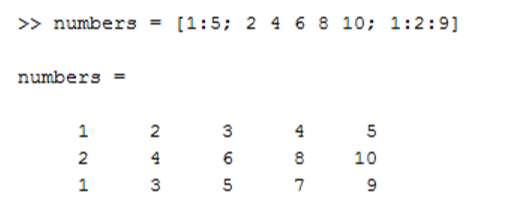
This will create a 2 dimensional matrix with 5 columns and 3 rows.
Accessing Values From Arrays And Matrices
Unlike many other programming languages, arrays in MATLAB are 1-indexed, meaning the array starts counting at 1 (rather than starting counting at 0, which is how many other popular languages work).
Similarly, to access a certain value from a matrix, type in the name of the matrix followed by the index you want in parentheses, but this time, the index is not a single number : since we have rows and columns in our matrix, we need to specify (row,col) to get the correct value.
For example, if we want to access the value from second row, fourth column of our numbers matrix, we need to do the following:
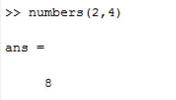
Changing Values From Arrays And Matrices
After values have been entered, those values can be overwritten or new values can be added. To overwrite a value, simply reassign that value to something new.
Enter array(1) = 6
To enter a new value, assign the next index (remember that '='' is used to assign values to a variable).
Enter array(6) = 7
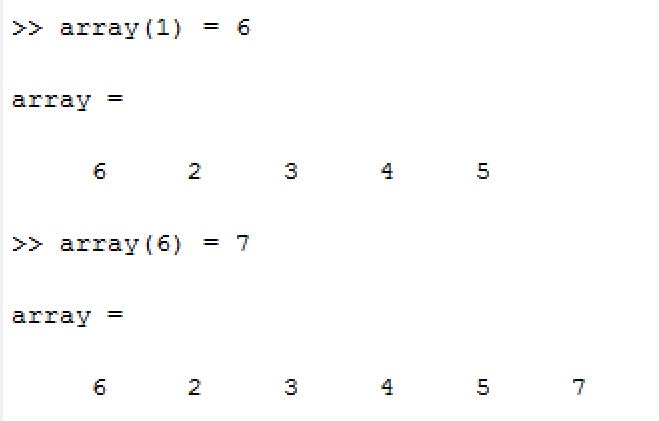
Be careful when manually updating items in an array; it is very easy to accidentally overwrite data by making index errors!
When you add a single value to a matrix, MATLAB keeps the matrix square and fills in the missing values with zeroes.
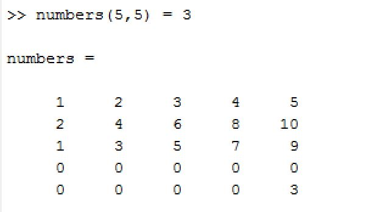
Deleting Values From Arrays And Matrices
To delete a value from an array, set the value to "[]".
For example, to delete the second value from our array, simply enter array(2) = []
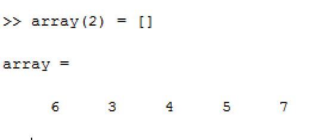
MATLAB doesn’t allow you to delete a single value from a matrix, because that would result in a nonrectangular matrix. Instead, you can delete an entire row or column.
Vectors
In MATLAB, a vector is a matrix with either one row or one column. the distinction between row vectors and column vectors is essential. Many programming errors are caused by using a row vector where a column vector is required, and vice versa.
Operations of Arrays And Matrices
Concatenating Arrays And Matrices
Let's create a new array: concatenate = [1 2 3]
Now we concatenate it with our old array to create: combined = [array concatenate]
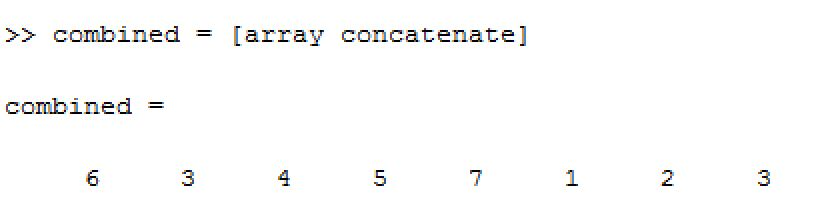
Note that the whitespace between "array" and "concatenate" is required for concatenation!
Transposing Arrays
We can transpose (flip the direction) of the array by typing in the name of the array and add a single quote after the name:
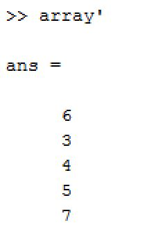
Useful Operation Reference
the reference chart below shows useful operations with arrays and matrices
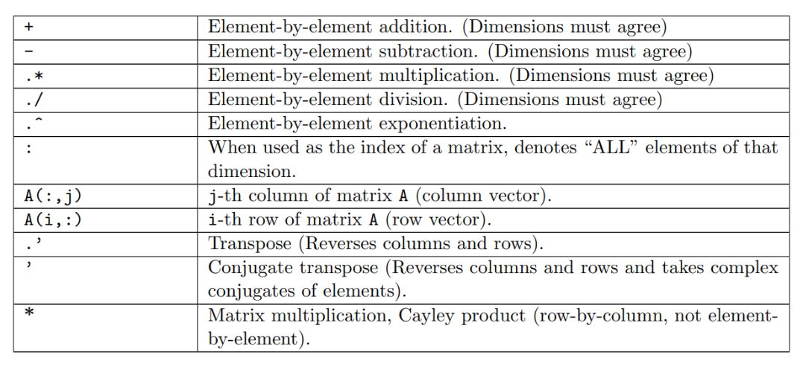
Several important things to know:
- The dot operator is used whenever you want to perform something on each individual value in a matrix, instead of using the rules of matrix multiplication.
- The rule of matrix multiplication: the first matrix must have the same number of columns as the second matrix has rows.
- The difference between .' and ': .' is used to transpose (reverse column and row), whereas ' is used to conjugate transpose (reverse column and row and take complex conjugate of elements)
If you want to know more about conjugate transpose of a matrix, please refer to the link:
conjugate transpose
Built-In Functions
In addition to calculations, MATLAB has many built-in functions that can return information about the array. We are just going to talk about some of the basic functions. First, say we want to sum the values in our numbers matrix. We are going to search for a function to do this sum.
-
"At the Command Prompt, enter "
help sum
MATLAB returns information about the function and a link to the help file that gives more information about the function. You can see that “sum” will sum across each column in a multidimensional array.
-
"At the Command Prompt, enter "
sum(numbers)
Some other common functions are:
| Function |
Output |
| exp(x) |
exponent of x |
| sqrt(x) |
square root of x |
| log(x) |
equivalent to ln(x) |
| log10(x) |
equivalent to log(x) |
| mod(x,y) |
modulus of y divided by x |
| round(x) |
x rounded to the nearest whole number |
| ceil(x) |
rounds each element of X to the nearest integer greater than or equal to that element |
| size(x) |
returns the number of rows and columns in the matrix |
| ones(m,n) |
creates an m-by-n matrix of ones (m rows, n columns) |
| zeros(m,n) |
creates an m-by-nmatrix of zeros |
| length(x) |
number of elements in x |
| eye(m,n) |
creates an m-by-n matrix with ones on the main diagonal and zeros elsewhere |
For more built-in functions, refer to this link
Exercises With Answers For the Section:
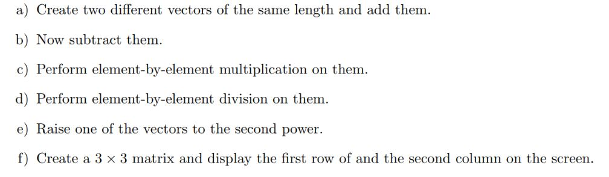
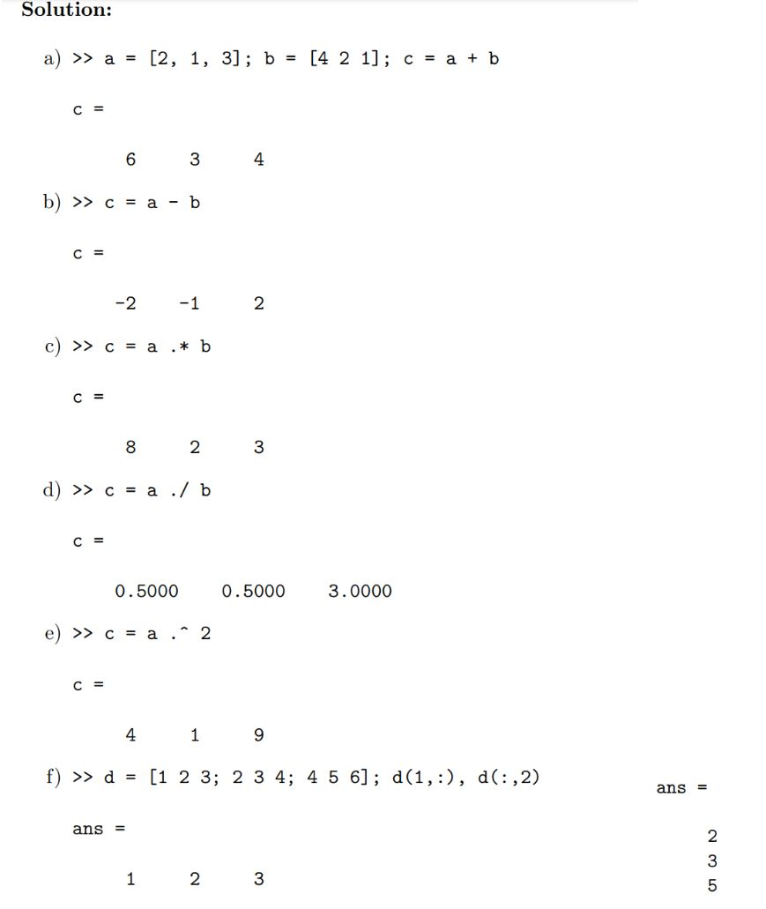
Scripts
Using Scripts
Click the New Script button in the upper left corner of the screen. this opens up the Editor.
Enter the following code into the Script:
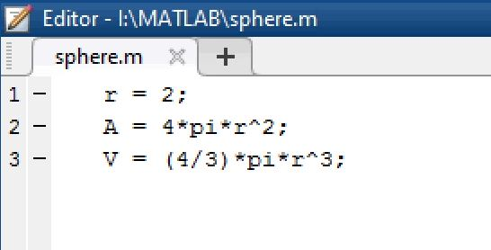
Save the file as "sphere.m"
Press the green "run" button at the top panel. You will see the names and values of our variables r, V and A appear in the workspace.
To create a new script, we can use the edit command: eidt scriptName
Comments
We can add comment to our code in script by using "%" to make our code more readable.
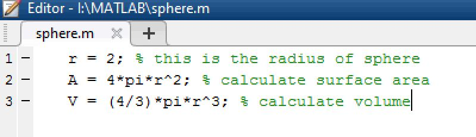
Plotting
Another powerful feature of MATLAB is its plotting ability. MATLAB can create a multitude of graphs, such as line graphs, bar graphs, contour graphs, 3D graphs and weather maps. MATLAB can also create movies, which are a series of graphs shown sequentially.
2D Plotting
Enter the following lines in the command prompt:
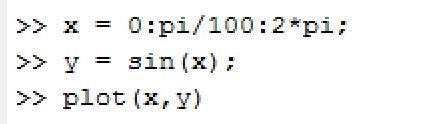
And you will get:
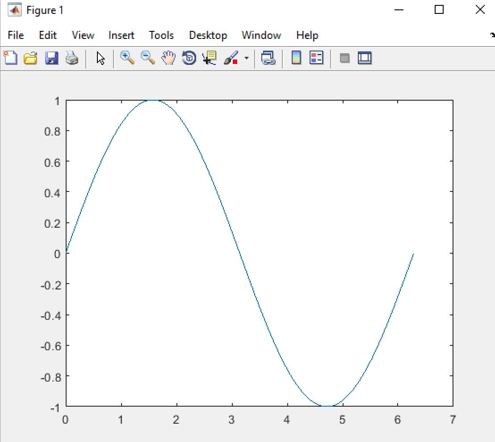
You could add title, xlabel, ylabel and even legend to it using the syntax: For example: title('title name').
The single quotes surrounding the text are required to make it work!
3D Plotting
MATLAB also allows us to plot in three dimensions. We will use some built-in functions to generate a 3D graph. The meshgrid function is used to create the arrays passed to the peaks function. the peaks function is useful for demonstrating 3D graphing; it takes two variables and creates mountains from the data. Finally, the mesh function displays the graph.
At the Command Prompt, enter [X,Y] = meshgrid(-3:.125:3);
Enter Z = peaks(X,Y);
Enter mesh(X,Y,Z)
The mesh function creates a wireframe mesh.
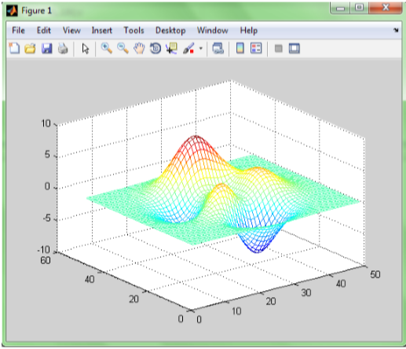
Enter surf(Z)
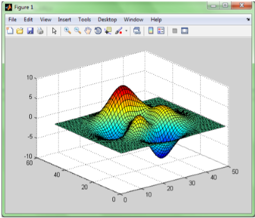
The surf function is used to create a 3D surface plot. Both of the graphs represent the same data. The X and Y represent the coordinates and the Z data represents the height at each point. The color of the graph is determined by the height.
Movies
Another plotting technique in MATLAB is animating movies. Essentially, a movie in MATLAB is just a sequence of plots shown sequentially and quickly. Let’s make a movie of the distances each ball travels. To do this, we need to create a plot for each time point and store those graphs in a variable.
At the Command Prompt, enter the following:
- for i = 1:length(time)
- plot(distance(:,1:i)’);
- axis([1 11 0 35000]);
- f(i) = getframe; end
Let’s walk through this code. The first line starts a for loop, telling MATLAB to go through the loop for as many times as time has values.
The second line plots the first time point till the current time point. So when we go through the loop for the fifth time, for instance, the plot will show the first five time points.
The third line sets the axes to be the same on every frame of the movie. And the final line stores the graph in an array.
We now have an array f with 11 pictures in it. To play those pictures, we use the movie command.
Type movie(f)
Conclusion
the best way to get better at MATLAB is to practice. there are some great resources within the program (like the Help menu and tutorials) that will walk through many of the different functions and syntactical intricacies of the program. Keep at it and soon you will be a MATLAB Master.